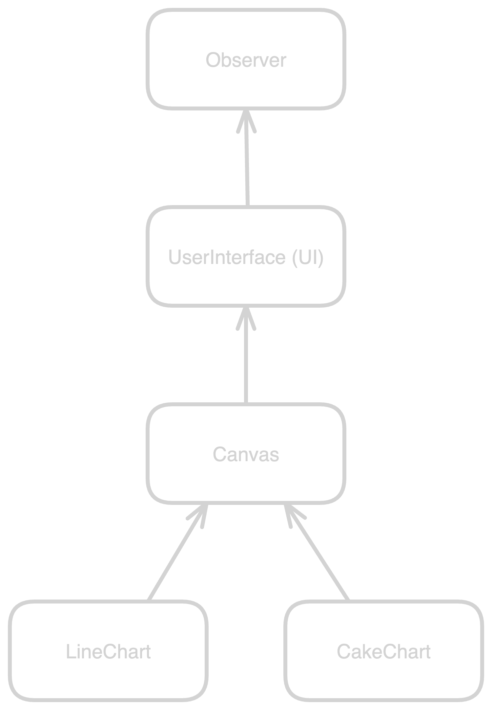
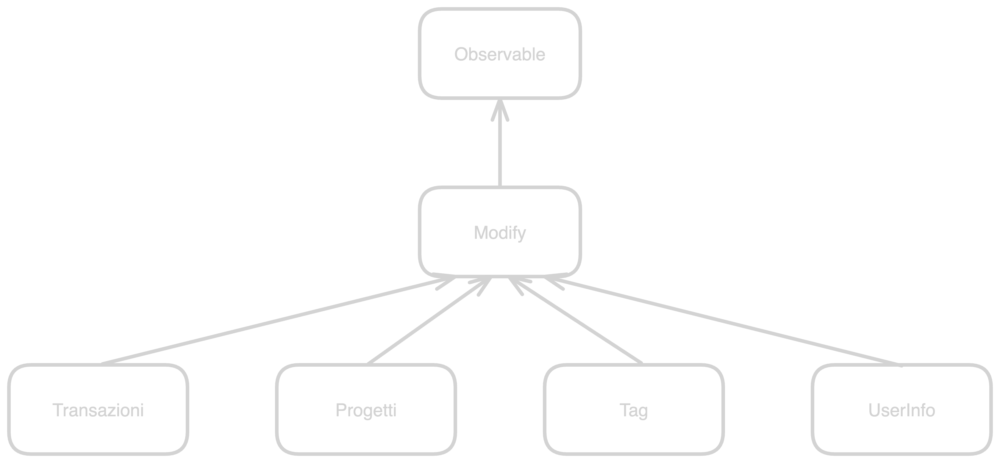

Backlog
- ho progettato un po' di cose
- principalmente front-end e backend
Front-end
- bisogna ristrutturare il codice
- bisogna adottare una gerarchia e dei pattern
- per rendere il codice più comprensibile e manutenibile
Canvas

Canvas
Canvas è la classe che si occupa di interagire con l'elemento canvas di html. Non ho guardato eccessivamente il codice di Simone, può darsi che si riesca a creare una classe che sta in mezzo tra la mia e la sua. Forse mi sbaglio. Nel nostro sito abbiamo deciso di sviluppare due canvas: LineChart e CakeChart.
Observer
Ciascuna cavas deve essere aggiornata quando i dati di riferimento (le transazioni) nel client sono aggiornati.
UserInterface
Le canvas non sono le uniche classi che visualizzano i dati sul client. UserInterface è la classe che raggruppa gli elementi che visualizzano i dati nel client. UserInterface fornisce un'interfaccia comune per visualizzare i dati. Questa divisione è virtuale, nella pratica Observer e UserInterface sono collassate in una sola classe.
List

List
Tutti i dati che non sono visualizzati mediante una canvas sono visualizzati tramite l'elemento list (in realtà anche i dati visualizzati tramite canvas, sono visualizzati tramite list). A questo gruppo apparterranno le classi:
- Transazioni
- Progetti
- Tag
- UserInfo
Observer
Ogni volta che i dati sul client sono cambiano, è necessario aggiornare anche la loro visualizzazione sulla pagina. L'observer sarà notificato dalla classe che si occupa di aggiornare i dati, ogni volta che risulta necessario.
UserInterface
La desrizione di prima è sufficiente.
Modify

Modify
I dati inseriti dall'utente potrebbero essere sbagliati. Oppure l'utente potrebbe volerli modificare. Questa classe si occupa proprio dell'aggiornamento, della modifica o dell'eliminazione dei dati. A tutti gli effetti, questa è la classe che si occupa delle post request.
Observable
Ogni volta che viene eseguita una post request, è necessario notificare la classe che si occupa della gestione dei dati sul client. Infatti ogni volta che viene eseguita una post request, sappiamo che almeno qualche dato nel server differisce rispetto ai dati nel client. Questa classe segnala la discrepanza e ordina l'aggiornamento dei dati sul client.
Proxy

Proxy
Proxy è una classe generica per la gestione dei dati. Si occupa di effettuare le get dei dati. Per questo motivo, c'è bisogno di una classe proxy per ogni dato dinamico all'interno della pagina. I dati dinamici saranno:
- Transazioni (le liste di transazioni e le canvas sono dinamiche);
- Progetti (la lista dei progetti è dinamica);
- Tag (le liste dei tag sono dinamiche);
- UserInfo (le informazioni dell'utente sono dinamici);
- Nome progetto.
Observable
Ciascuna classe proxy deve essere un observable, infatti ogni volta che viene eseguita una get request, i dati dinamici all'interno della pagina devono essere aggiornati. Le classi che si occupano di aggiornare i dati saranno gli observer. Mentre questa classe sarà un'observable per poter notificare l'aggiornamento dei dati.
Observer
Questo è meno intuitivo. Ciascuna classe proxy deve essere un observer, infatti ogni volta che viene eseguita una post request, i dati nel database sono cambiati. Allora i dati nel client devono essere aggiornati. Come sono aggiornati? Quando viene eseguita una post, la classe che esegue la post è un observable che notifica la classe proxy, che effettua una nuova get e aggiorna i dati sul client.